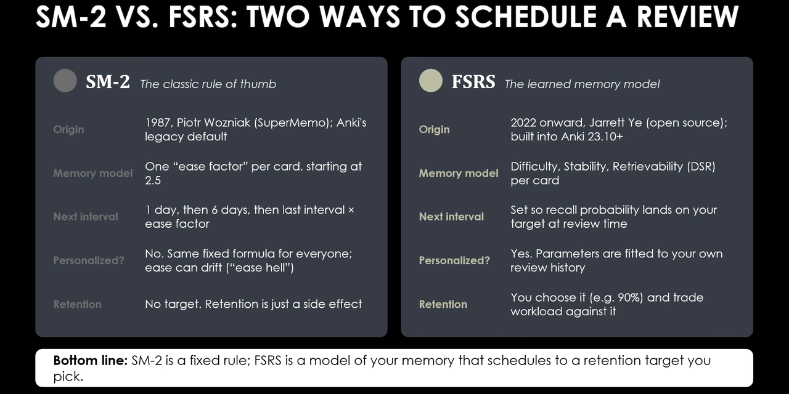
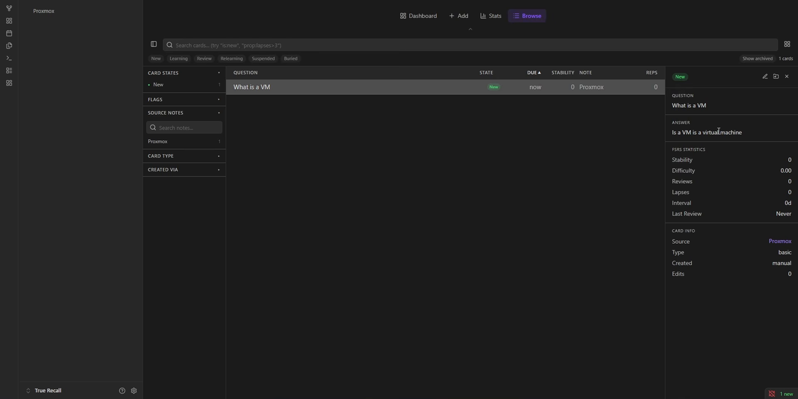
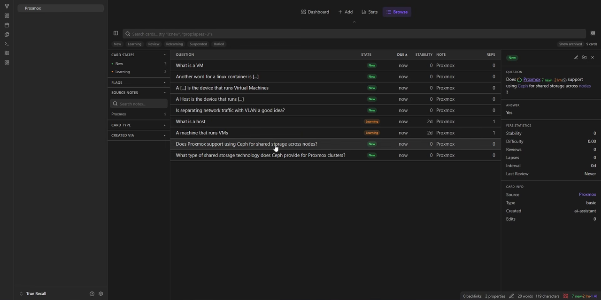

Obsidian Flashcards Made Simple: Spaced Repetition with True Recall & FSRS

If you study technical certifications, conduct in-depth research, or build a personal knowledge base inside Obsidian, you are likely familiar with the proven science of active recall and spaced repetition. Yet, if you are like the vast majority of knowledge workers, you probably gave up on flashcard systems like Anki after a few weeks.
The reason is not a lack of discipline; it is context switching friction. Having to stop reading, switch windows, open an external flashcard application, and copy-paste concepts between disconnected databases destroys your focus. Over time, your primary Obsidian notes and your flashcard decks drift apart, creating dual-maintenance debt that quickly leads to study burnout.
In this guide, we explore True Recall, an Obsidian community plugin developed by Lucas that integrates spaced repetition directly into your vault. True Recall eliminates markdown syntax clutter, implements the modern FSRS (Free Spaced Repetition Scheduler) algorithm instead of rigid 1980s math, supports automated card generation via local AI models (BYOK), and provides visual retention tracking right inside your workspace.
This tutorial is completely unsponsored. The developer of True Recall kindly offered a complimentary Pro license key, which I chose to decline. We tested this workflow using the exact configuration available to everyone: 100% free, using native local learning features and bringing our own local AI endpoints.
flowchart TD
subgraph SM2 ["Legacy SM-2 Engine (1987)"]
FixedEase["Initial Ease Factor = 2.5"]
RigidMath["Rigid Intervals:\nDay 1 -> Day 6 -> Day (N * 2.5)"]
EaseHell["Card Lapse Penalty:\nEase Factor Drops Permanently\n'Ease Hell' Review Overload"]
FixedEase --> RigidMath --> EaseHell
end
subgraph FSRS ["Modern FSRS Model (2022+)"]
Pillars["Memory State Tracking:\nDifficulty (D) | Stability (S) | Retrievability (R)"]
TargetRetention["Desired Retention Target\n(e.g., 90% Probability of Recall)"]
OptimalInterval["Adaptive Calculation:\nReview Scheduled Exactly When\nMemory Probability Hits Target"]
Pillars --> TargetRetention --> OptimalInterval
end
classDef legacy fill:#152033,stroke:#ef4444,stroke-width:1.5px,color:#f8fafc;
classDef modern fill:#0f111a,stroke:#4ade80,stroke-width:2px,color:#f8fafc;
class SM2,FixedEase,RigidMath,EaseHell legacy;
class FSRS,Pillars,TargetRetention,OptimalInterval modern;
Why FSRS Completely Outclasses Legacy SM-2
Most legacy flashcard applications (including default Anki profiles) still rely on the SM-2 algorithm, formulated by Piotr Woźniak in 1987. While groundbreaking for its era, SM-2 suffers from severe mathematical limitations that create study fatigue:
- Rigid Ease Factors: Every flashcard begins with an arbitrary "ease factor" of 2.5. Reviews follow a fixed progression: 1 day, then 6 days, then previous interval multiplied by 2.5.
- The "Ease Hell" Trap: If you struggle with a complex technical topic (such as subnet masking or Ceph quorum math) and rate a card "Hard" or "Again" multiple times, SM-2 permanently reduces the ease factor. Even after you master the concept later, the card remains artificially trapped in short intervals, forcing dozens of redundant reviews.
- No Retention Control: With SM-2, you cannot choose your retention target. Whatever percentage of facts you remember is simply a passive byproduct of rigid formulas.
The FSRS Advantage
Developed from 2022 onward as an open-source data science initiative, FSRS (Free Spaced Repetition Scheduler) replaces crude heuristics with a machine-learning model based on three pillars of human memory:
- Difficulty (D): How intrinsically complex the information is.
- Stability (S): How slowly memory traces decay over time.
- Retrievability (R): The probability that you can successfully recall the information on any given day.
Instead of locking cards into fixed multipliers, FSRS continuously fits its parameters to your actual review history. Most importantly, you set a Desired Retention target (such as 90%). The algorithm calculates the forgetting curve and schedules your next review precisely when your statistical probability of remembering the card drops to 90%. If you are cramming for an IT exam next week, you can dial retention up to 95%; for relaxed long-term hobby reading, you can lower it to 85% to cut daily review workloads in half.

Step 1: Installing & Configuring True Recall in Obsidian
Installing True Recall requires no manual file downloads or terminal commands:
- Open Obsidian and navigate to Settings → Community plugins.
- Ensure Restricted mode is turned Off.
- Click Browse, search for
True Recallby Lucas, click Install, and then click Enable.
Key Settings Breakdown
Open the True Recall plugin settings. You will see five primary configuration sections:
- FSRS Configuration: Review the default parameters. The single most important setting is Desired Retention (default:
0.90/ 90%). Leave this at 90% for a balanced study workload. - Integrations & Cloud Sync: True Recall includes built-in encrypted sync across 2 devices on the free tier (and 5 devices on Pro). This allows you to create cards on your desktop workstation and complete daily reviews on your mobile phone or tablet.
- Features & AI Provider: Configure whether you are operating in local-only mode, using Bring Your Own Key (BYOK) with OpenAI/OpenRouter, or connecting to a self-hosted local model like Ollama.
Unlike legacy plugins that inject noisy HTML comments (e.g. <!--ID: 17294819-->) directly into your clean markdown prose, True Recall stores review schedules and metadata in the background. Your notes remain pristine, standard markdown compatible with our Markdown Table & Frontmatter Formatter.
Step 2: Structuring Your Knowledge with Projects
Before generating cards, launch the True Recall dashboard using the brain icon in your left Obsidian ribbon. The first step is creating a Project.
Projects act as isolated study domains. If you are preparing for a Cisco CCNA certification, studying Spanish vocabulary, and configuring a Proxmox home lab, you want to keep those learning tracks segregated:
- In the True Recall dashboard, click + Project.
- Name your project (e.g.,
Proxmox Home LaborSystem Architecture). - Assign notes from your vault to this project.
Step 3: Creating Active Recall Flashcards
True Recall supports three native card architectures directly out of the box:
1. Basic Flashcards (Front / Back)
The fundamental active recall card. Click Add, select your project, enter a prompt on the front, and provide the concise explanation on the back:
Front: What is a Linux Container (LXC)?
Back: An OS-level virtualization method that shares the host Linux kernel directly, offering sub-second boot times and near-zero memory overhead.2. Basic Reversed (Bidirectional Learning)
Basic reversed cards automatically generate two distinct test items from a single entry. For example, testing the port assignment of a protocol:
Card 1 (Forward): What default port does DNS operate on? -> Port 53
Card 2 (Reversed): What service runs on Port 53? -> DNS3. Cloze Deletion (Fill-in-the-Blank)
Cloze deletions allow you to mask specific words or technical terms directly within a sentence using double curly braces:
Proxmox VE uses {{c1::Ceph}} for distributed block storage across cluster nodes, requiring a minimum of {{c2::three}} voting monitors for quorum.This single note automatically produces two separate test cards: one testing for the word "Ceph", and another testing for "three".

Step 4: Auto-Generating Cards with Local AI (BYOK)
Creating dozens of flashcards manually can be tedious. True Recall solves this with inline AI card generation:
- Open any standard technical note in your vault (such as our Budget Proxmox Cluster Guide).
- Highlight a sentence or paragraph explaining a technical concept.
- Click the floating True Recall action pill above your selection.
- Choose Ask AI → Create Cards.
True Recall sends the highlighted context to your configured AI provider (such as an Ollama instance running locally or OpenRouter) and proposes multiple candidate cards. You can inspect each card, modify the phrasing, reject weak items, and click Apply All to commit them to your review deck in seconds.

Step 5: Conducting Reviews & The 4 Rating Buttons
To start your daily study session, click Review in the dashboard. You can review all vault cards together, or click the Play button on a specific project to focus solely on one subject.
When a card appears, read the question, actively formulate the answer in your mind, and press the Spacebar to reveal the reverse side. Underneath the answer, you will see four rating choices:
| Button | Interval Action | When to Press |
|---|---|---|
| Again (1m) | Recycles card into today's active queue | Complete recall failure; you blanked on the answer. |
| Hard | Short interval multiplier | You remembered the answer, but required significant mental effort. |
| Good | Standard FSRS target interval | The default baseline button for normal, successful recall. |
| Easy | Pushes card out days or weeks ahead | Immediate recall; concept is fully solidified in long-term memory. |
Never be afraid of the Again button. Unlike legacy SM-2 which punishes you with permanent "ease hell", FSRS simply recalibrates the card's Stability score. Pressing Again ensures you see difficult concepts before your session closes, reinforcing memory synapses before sleep consolidation.
Visual Retention Analytics & The Streak Heatmap
Spaced repetition depends on daily momentum. Missing study sessions allows forgetting curves to steepen, causing cards to pile up in backlog queues. True Recall addresses this psychological barrier with its dedicated Stats & Analytics command center:
- GitHub-Style Calendar Heatmap: A visual grid recording every day you complete a study session. Building an unbroken streak directly inside your note-taking app provides immediate visual accountability without needing separate habit trackers.
- Retention Curves: Live graphical analysis showing your empirical recall percentage compared against your Desired Retention target.
- Card Maturity Breakdown: Tracks the transition of concepts from "Young / Learning" status into "Mature / Long-Term" memory.
- Rating Distribution: Shows the proportion of Again, Hard, Good, and Easy responses, helping you identify subjects that require clearer source notes.
Free vs. Bring Your Own Key vs. Pro Breakdown
True Recall offers three distinct tiers of functionality:
| Capability | Free Tier | Bring Your Own Key | True Recall Pro |
|---|---|---|---|
| FSRS Engine & Local Cards | Yes (Unlimited) | Yes (Unlimited) | Yes (Unlimited) |
| Encrypted Cloud Sync | 2 Devices | 2 Devices | 5 Devices |
| AI Card Generation | Manual Only | Yes (via Ollama / Custom API) | Yes (Hosted Cloud AI) |
| Image Occlusion | No | No | Yes |
| AI-Graded Typed Answers | No | No | Yes |
For 95% of self-hosters and digital creators, the Free + BYOK (Bring Your Own Key) setup provides everything needed for world-class learning without any recurring subscription.
Frequently Asked Questions
What is the difference between FSRS and SM-2 in spaced repetition?
SM-2 (from 1987) uses fixed ease factor multipliers and rigid interval schedules that frequently trap users in "ease hell." FSRS is a modern machine-learning model based on human memory pillars: Difficulty, Stability, and Retrievability. It personalizes review schedules to your specific learning speed and allows targeting a specific retention rate (such as 90%).
Does True Recall clutter my Obsidian markdown files with card metadata?
No. Unlike older plugins that insert intrusive comment blocks and card IDs into your notes, True Recall manages flashcard data and review history in background data stores. Your markdown files remain clean, portable, and readable in any text editor.
Can I use AI flashcard generation for free without paying for True Recall Pro?
Yes. True Recall allows you to connect your own local AI provider (such as Ollama running locally on your homelab) or an OpenRouter API key completely free. Pro is only required if you want developer-hosted cloud AI, automated Image Occlusion, or AI-Graded typed answers.
Key Takeaways & Next Steps
By integrating spaced repetition directly into your Obsidian vault, True Recall eliminates the copy-paste friction that derails most flashcard workflows. Powered by the adaptive FSRS algorithm and enhanced by local AI generation, it transforms static notes into an active recall study system.
To expand your Obsidian productivity system:
- Download our pre-configured Tech Simpld Obsidian Starter Vault (2026 Edition).
- Format your raw study notes with our Markdown Table & Frontmatter Formatter.
- Explore our step-by-step guide on Building a Zero-Lag Second Brain in Obsidian.